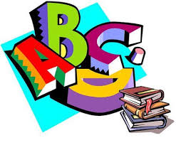

기초영문법- 제 1강
 초보 VS 왕초보 - 나의 회화실력은 어느쪽?
3초 테스트로 알아보기
초보 VS 왕초보 - 나의 회화실력은 어느쪽?
3초 테스트로 알아보기
Lesson 1
-

1. 동사 verbs
영어는 시간에 대해 자세히 표현하는 언어이며, 말하는 사람이 정확히 표현해야 한다.
변하지 않는 사실이나 일반적 사실, 반복적으로 이루어지는 행동 등, 원래 그렇다고 할 수 있는 것들은 동사를 원래 모양 그대로 써서 사용한다.
문장변형
(평서문>부정문>의문문>의문사)
-

2. ~ing 형
(듣는 사람이 시간에 집중하게 됨) ▶ n || adj
우리는 TV를 별로 보지 않는다. We don't watch TV very often.
나는 그를 그다지 좋아하지 않는다. I don't like him very much.
나는 영어를 잘하지 못한다. I don't speak English very well.
-

3. 동사 s 발음
▶ Voiced (성대가 울리는 소리) : / z / 예) study -> studies
▶ Unvoiced (성대가 울리지 않는 소리) / s / 예) like -> likes
▶ ~ch, ~sh, ~s + 'es' / iz / 예) watches, washes, dances